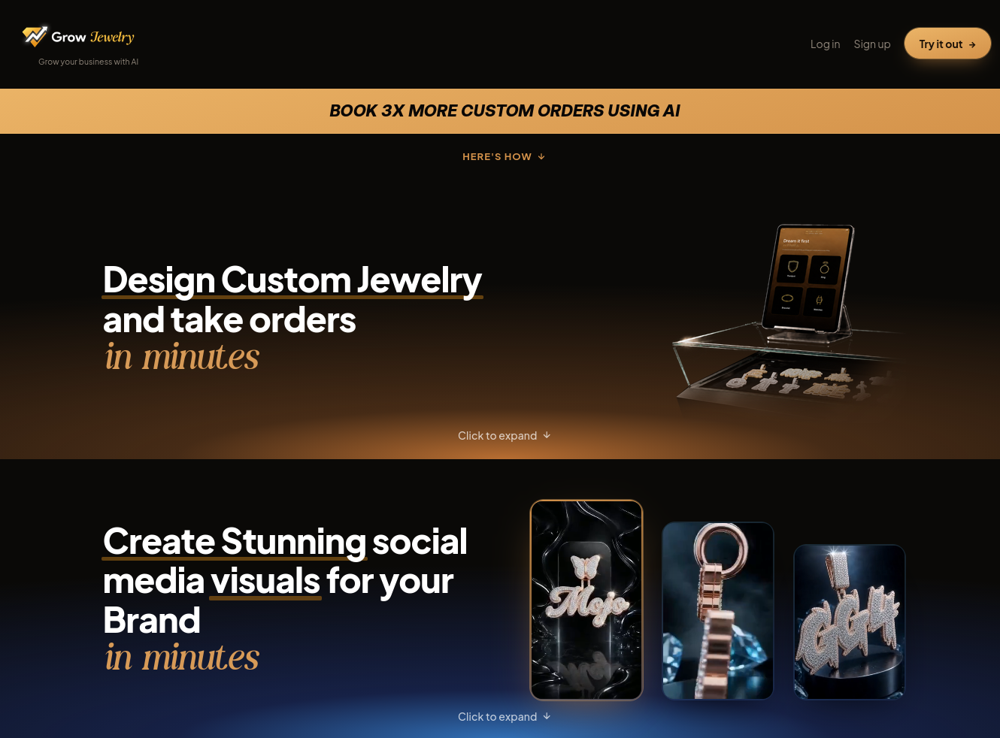
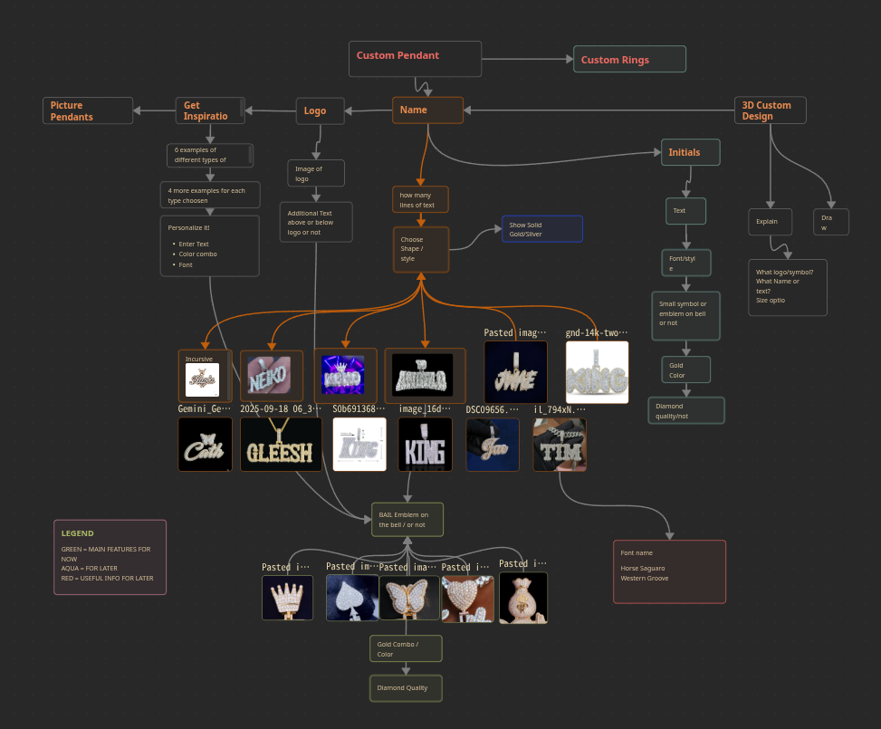
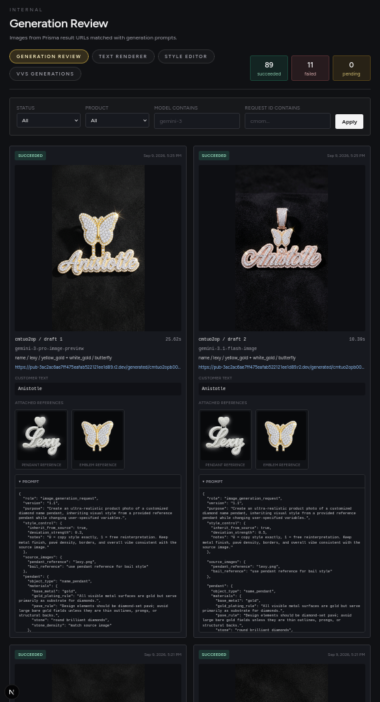
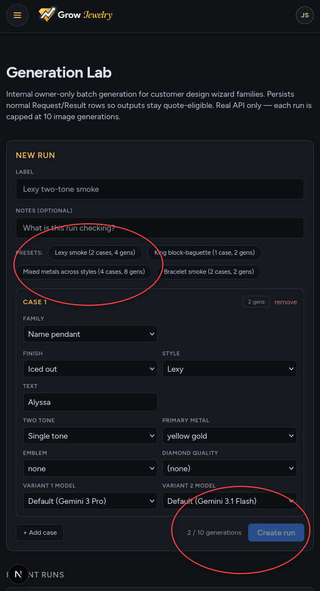

Product · AI image generation · B2B SaaS
Grow Jewelry
A full-stack product that helps jewelry stores turn a customer's vague idea into realistic concepts and a quote-ready lead while the customer is still in the store.

The business problem
I had worked in a jewelry store as a graphic designer and videographer, so I was familiar with the problem.
Customers would come in wanting a custom order—from a wedding ring to a name pendant or necklace—but usually had only a vague understanding of what they wanted. In my experience, showing customers how the piece could look could nearly double the conversion rate on the spot.
- The issue: a traditional CAD jewelry design can take days or weeks to create.
- Drawings do not give customers the same feeling as a realistic rendering of the finished piece.
- If the customer leaves without a clear visual, their initial excitement can turn into “I'll think about it.”
The solution: use AI and a constrained design decision tree to generate realistic concepts on the spot, so customers can envision what they want before they leave the store.
Tech stack and implementation
React + TypeScript — I already had experience with them, and they made cross-device functionality easier than other frameworks.
Next.js for dynamic routing — it integrated well with Vercel, my cloud provider, and made it easier to build dynamic cross-device apps.
Tailwind CSS — the UI framework I wanted was available in Tailwind.
Prisma — I use it to define the database schema.
 PostgreSQL — I use it as the database type for requests, results, leads, and quotes.
PostgreSQL — I use it as the database type for requests, results, leads, and quotes.
 Supabase — it hosts the PostgreSQL database and provides owner authentication.
Vercel — I chose it to host the Next.js application and API routes.
Google GenAI SDK — I use it for the AI image-generation workflow, sending prompts and selected references to Gemini.
Supabase — it hosts the PostgreSQL database and provides owner authentication.
Vercel — I chose it to host the Next.js application and API routes.
Google GenAI SDK — I use it for the AI image-generation workflow, sending prompts and selected references to Gemini.
From an idea to a quote-ready lead
I designed the product around the conversation that already happens at a jewelry counter:
- A customer opens the store's design link or scans its QR code.
- They choose the piece, style, text, metal, stones, emblem, and other relevant details.
- The app turns those choices into a structured prompt and selects the matching visual references.
- Two image variants generate asynchronously and appear as they finish.
- The app saves the customer's choices, generated concepts, and contact information as a lead.
- The store owner chooses the exact concept, adds pricing and production details, and prepares a private quote link.
This makes the AI generation useful inside a business workflow. The output is not only an image; it is attached to the customer's selections and carried forward into a quote the owner can review and send.
Constraining the design space
This is the user decision tree for the custom jewelry designer. It keeps the model focused on combinations that are relevant to real jewelry orders instead of asking the customer to write a prompt.

- Customers make familiar product decisions rather than prompt-engineering decisions.
- Each style owns its allowed options, defaults, prompt template, and reference images.
- Inputs such as text, metal color, emblem, and style are validated before generation.
- The same selections are persisted for the owner, so the generated concept stays connected to the eventual quote.
Prompts and testing
There are pre-selected image assets for most jewelry-design combinations. The user's choices determine which references are attached and are turned into a prompt through a structured pipeline. I tested and iterated on these prompts over a few months until they produced accurate, realistic results.
The problem: image-model APIs changed frequently with new releases, disrupting my prompts. Google would sometimes throttle a preview model, which lowered the quality of generations.
The solution: I developed a prompt template and technique that could survive model upgrades. Because this is a commercial project for paying customers, I also needed to check outputs regularly and catch issues before they shipped.
- batch-test a new model before upgrading
- run eight tests at once with variant prompts
- diagnose issues when generations produce bad results


What I learned
The most important part of this project was not simply calling an image model. It was turning an open-ended customer request into a small set of useful decisions, preserving those decisions through generation, and giving the store owner enough context to take the next commercial step.
I also learned that visual AI needs an evaluation loop. Model names and prompt wording change, but the product requirements stay concrete: correct spelling, believable materials, connected construction, accurate customer choices, and a result a jeweler can confidently discuss. Persisting prompts and attachments made those failures easier to diagnose and improve.